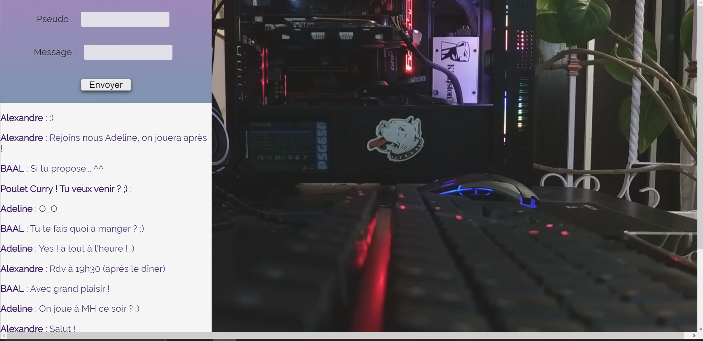
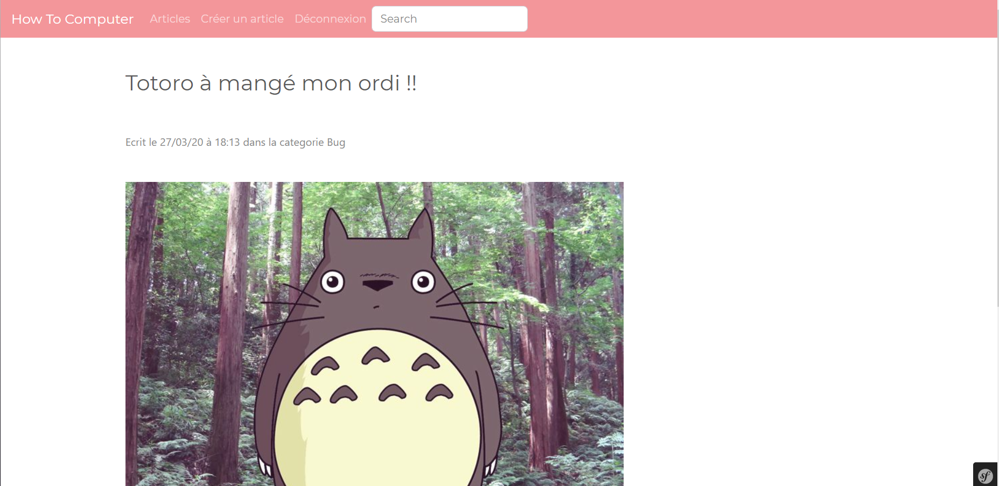
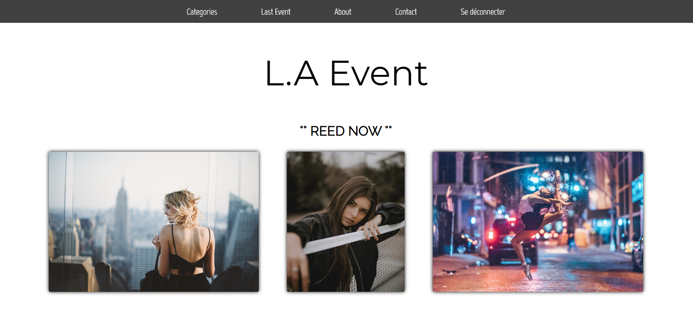
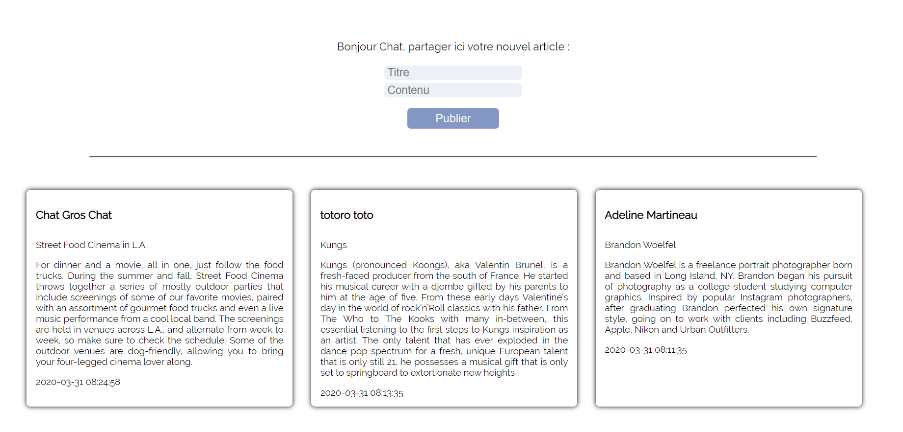
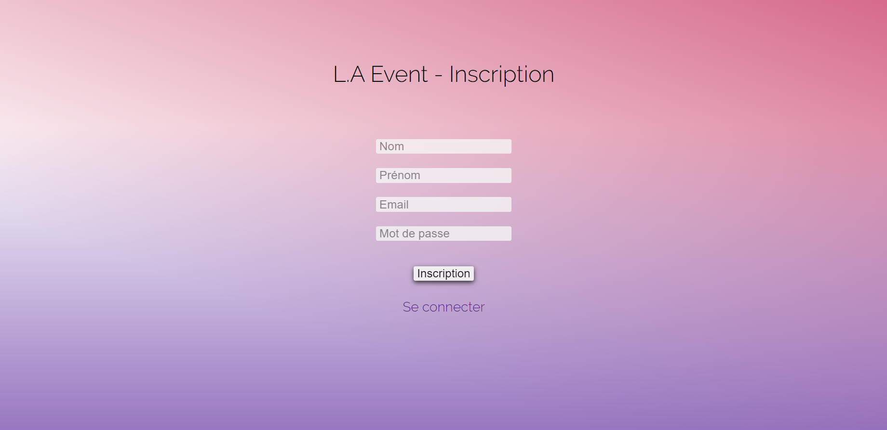
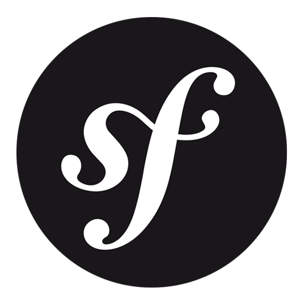

Qui suis-je ?
Je m'appelle Adeline, j'apprends le développement en Autodidacte et je vous souhaite la bienvenue sur mon Portfolio !
Vous trouverez ci-dessous les projets que j'ai réalisés afin de progresser dans divers langages de programmation. Je souhaite acquérir des compétences pour entrer en BTS SIO option SLAM.
Autrement, mes passions sont les suivantes : la musique (je joue d'ailleurs de la guitare), les livres, les séries, et les jeux vidéos !

Mes projets
Shared: Réseau Social en Php :

MiniTchat : Plateforme de discussion en Php :
Apprentissage avec OpenClassrooms

How To Computeur : Site en Symfony
Créations de formulaire (articles, commentaires..) avec les vidéos de Lior CHAMLA


L.A Event: blog evenementiel en Php
Création de formulaires



Ma Veille Technologique
Je souhaite lors de mon BTS réaliser une veille Technologique sur la Cyber Sécurité face aux Black Hats. J’aime comprendre comment cela fonctionne, les risques d’internet qu’on ne voit pas tout le temps, comment sommes-nous protégés et les moyens mis en place pour détourner le hacking et autres ruses malveillantes.
Mes Technologies acquises et en cours d'acquisition
Langage de programmation :
- Coté Front -


- Coté Back -



- Gestion de code -

Base de données :


Système et administration réseau (en cours de renseignements sur la mise en place de serveurs) :